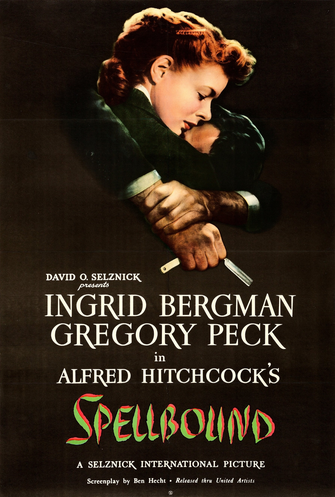

Spellbound
18th Academy Awards
(Oscars 1946)
6 Nominations, 1 Award
| Nominations | ||
|---|---|---|
| Category | Nominees | Result |
| Best Motion Picture | Selznick International Pictures | Nominated |
| Actor in a Supporting Role | Michael Chekhov | Nominated |
| Directing | Alfred Hitchcock | Nominated |
| Cinematography (Black-and-White) | George Barnes | Nominated |
| Special Effects | Jack Cosgrove | Nominated |
| Music (Music Score of a Dramatic or Comedy Picture) | Miklos Rozsa | Won |